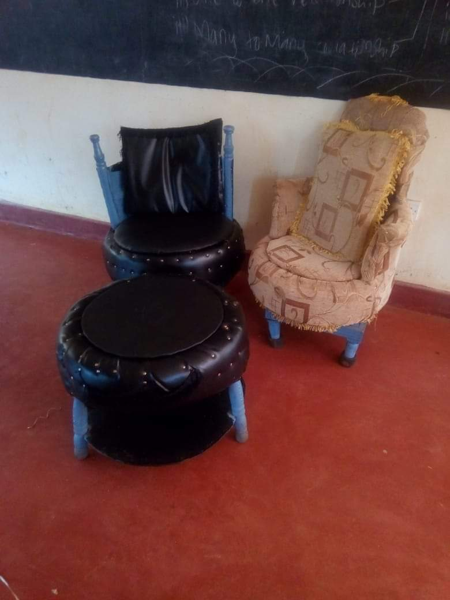

Myself

Call me your problem solver.
Call me your problem solver.
I am a Christian in the Anglican church since birth. I was baptised in 2003 and confirmed in 2013. I was born and brought up in Kirinyaga-central.I was brought up in a hamble background by my garndmother in a village called Inooi located in Ndia sublocation. I have engaged in alot of activities that have helped grow alot. I am currently living with my parents at South B Nairobi County. I am outgoing Physically, emotionally and socially.
I have done some git projects and here are some links.
github.com/BeatriceWambui/travel-hotel
github.com/BeatriceWambui/my-first-webpage
github.com/BeatriceWambui/medical-health
This is a project that I worked on the indentation
I have also worked on a project that was talent engaging in the year 2019. i made chairs and a table from used car tyres.  This project was out of self motivation.
For more information about Miss Wachira,
you can contact me through my Phone number
0706319305
You can email me on
@wachirabeatice2020@gmail.com